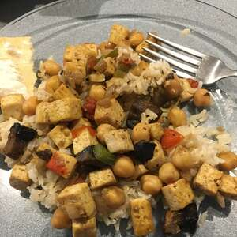

Tofu Masala

Description
A vegan take on a classic Indian dish. With a healthy balance of tofu and chickpeas, protein is abundant. Best served with basmati rice and/or naan bread.
Ingredients
- 1 tablespoon canola oil
- 1 (14 oz) package firm tofu, cubed
- 1 onion, chopped
- 1 clove garlic, minced (optional)
- 1 green bell pepper, chopped
- 1 (15 oz) can garbanzo beans, drained
- 1 tomato, chopped
- 2 tablespoons garam masala
- salt and pepper to taste
- 2 cups of water
Steps
- Heat 1 tablespoon of canola oil in a large skillet over medium-high heat. Add the cubed tofu, and cook until lightly browned on all sides, about 10 minutes; remove from the skillet and set aside. Reduce the heat to medium, and pour in the remaining canola oil. Stir in the onion, garlic, and green pepper. Cook and stir until the onion has softened and turned translucent, about 5 minutes.
- Return the tofu to the skillet along with the garbanzo beans and tomato. Season with garam masala, salt, and pepper, and pour in the water. Bring to a simmer, and cook for 10 to 15 minutes until thickened to your desired consistency. Remove from the stove, and allow to rest for 5 minutes before serving.